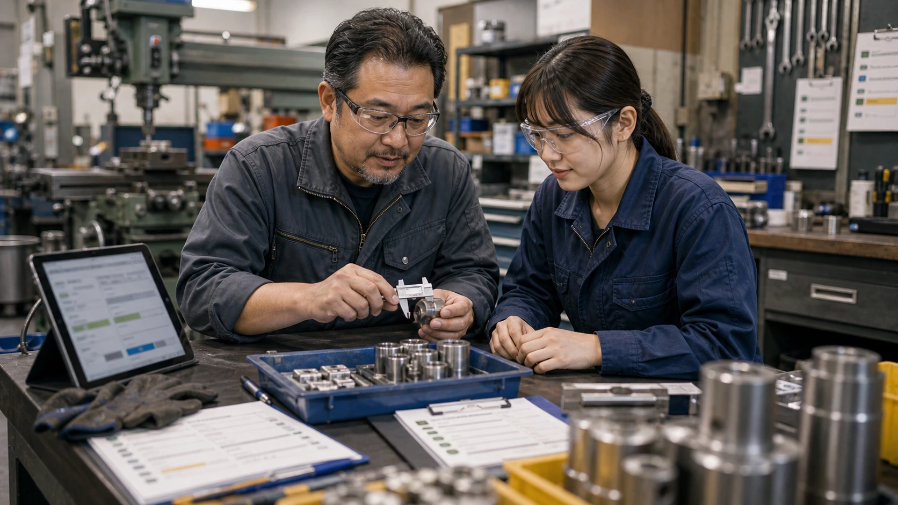
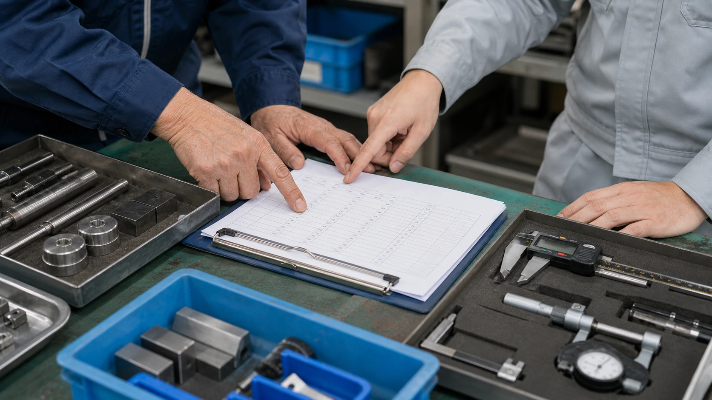
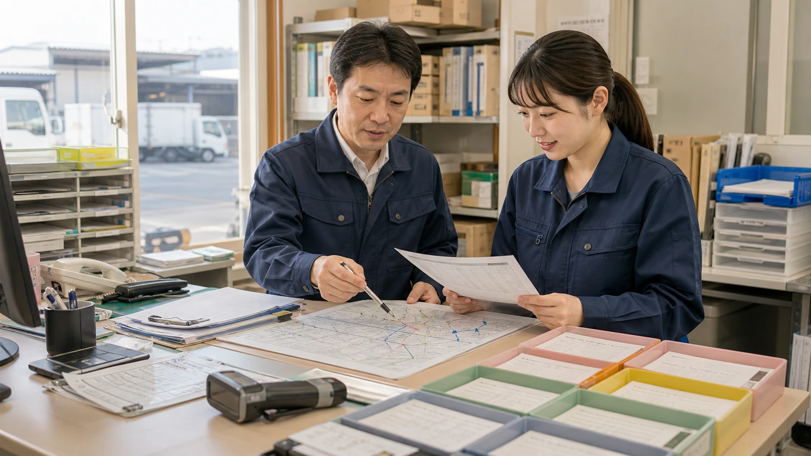
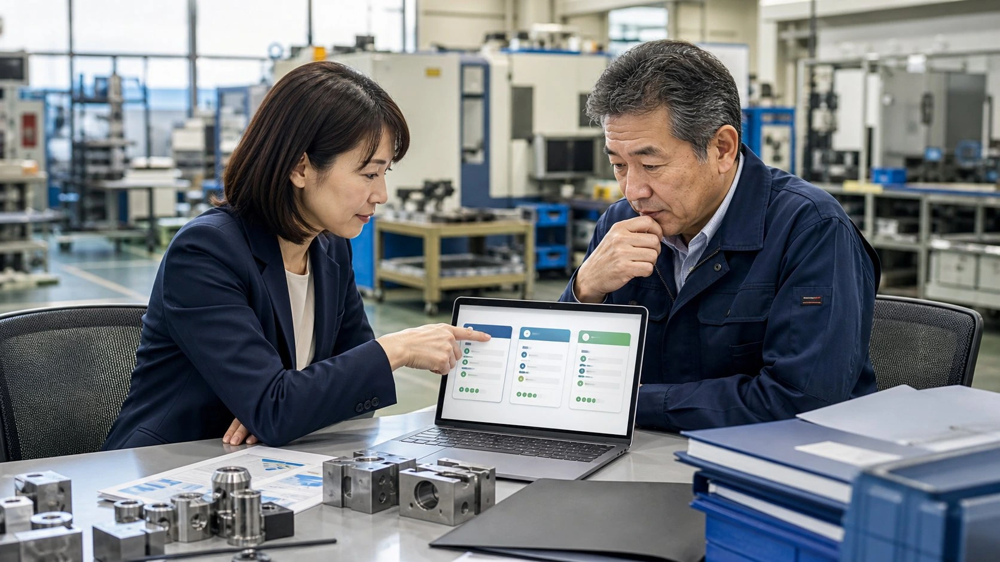

FAX注文の再入力を減らし、納期の返事を早める
問題のない注文は打ち直さず、読みにくい箇所だけ調べる
FAXの内容が基幹システム用のデータへ転記されるため、担当者は全項目を打ち直さずに済みます。読みにくい文字と納期だけを調べ、欠品連絡や納期回答へ早く移れます。
業務改善の例
現場写真から報告書を作る、問い合わせから返信案を作るなど、中小企業が少ない件数から試せる26の改善例を紹介します。

業務改善の例
各記事では、AIへ読み込ませるもの、作られる下書き、担当者が承認する項目を具体的に示しています。
問題のない注文は打ち直さず、読みにくい箇所だけ調べる
FAXの内容が基幹システム用のデータへ転記されるため、担当者は全項目を打ち直さずに済みます。読みにくい文字と納期だけを調べ、欠品連絡や納期回答へ早く移れます。
 電話受付・顧客対応
電話受付・顧客対応
電話後の入力を減らし、折り返し漏れを防ぐ
通話音声から応対履歴の下書きを作るため、担当者は紙メモを全文入力せずに済みます。折り返し時刻と担当部署を確かめ、次の電話へ移れます。
二重入力を減らし、期限接近品の使い忘れを防ぐ
ラベルを撮影すると期限日、ロット、数量の入力候補が表示されます。入庫担当は在庫表へ打ち直さず、品質管理担当は読みにくい文字と期限異常だけを現物で調べられます。
1案件45〜60分の作成を、15〜20分の修正へ
現場写真から報告書と連絡文の下書きができるため、帰社後の作業は45〜60分から15〜20分の修正へ。顧客への一次報告と協力会社への依頼を当日中に進められます。
 小売・観光施設・飲食
小売・観光施設・飲食
人員不足と連勤の偏りがある日だけを修正
希望休を一件ずつ転記せず、人数不足や連勤が続く日だけを店長が直します。閉店後の作業が短くなり、翌朝の売場確認や新人への声かけへ時間を使えます。

町工場・製造業資料探しを減らし、顧客への質問と価格検討を早める
図面や過去単価を何度も開かず、不足条件だけを原本で調べます。社長は加工方法と粗利の検討へ早く移り、顧客への質問が夕方まで遅れるのを防げます。
 店舗・多拠点・サービス業
店舗・多拠点・サービス業
紙マニュアルを探さず、通常の質問へその場で回答
スタッフは返品条件や在庫の調べ方を接客中に検索できます。通常の質問で店長を呼ぶ回数が減り、返金や取り寄せが必要な場合だけ相談できます。
返金相談・強い苦情・写真不足を始業時に表示
注文履歴やFAQを毎回開かずに定型質問へ返信できます。担当者は返金相談や強い苦情を早く見つけ、待たせている顧客への連絡に時間を使えます。
 BtoB営業・不動産・士業
BtoB営業・不動産・士業
当日フォローと再提案日を残す
商談で約束した資料を当日中に返しやすくなります。見送り案件にも次回連絡日が残るため、追客漏れを防ぎ、前回の続きから提案できます。

製造業・品質管理出荷を止める範囲を早く決め、不良品の流出を防ぐ
翌朝に写真や紙メモを探し直さず、不良が出たロットと工程から調査を始められます。責任者は出荷を止める範囲を早く決め、原因究明と顧客への説明へ進めます。
問題のある請求だけ原本を調べればよい
OCRで請求項目を読み、発注書・受領記録との違いに印を付けます。担当者が原本と受領実績を調べ、承認者が支払い可否を決めます。
 売掛金管理・月末経理
売掛金管理・月末経理
金額違いと未入金だけ調べる
金額が合う入金はそのまま消込へ進め、名義違い・一部入金・未入金だけを調べます。全件を見直す時間が減り、取引先への連絡も月末のうちに始められます。
月曜午前中の初回返信を目指す
履歴書と面接官の予定を何度も開かず、不足書類がある候補者だけを調べます。採用担当は月曜午前中から返信と日程調整を進められます。
3人の評価根拠と追加質問を1枚で比較
面接官3人のメモから評価根拠と未確認の質問が分かります。採用担当は資料を読み直さず、評価が分かれた点を話し合い、候補者へ早く連絡できます。
1件15〜25分の聞き取りを圧縮
夜中に物件台帳や修繕履歴を探し回らず、入居者へ早く折り返せます。管理担当は水漏れの広がりを調べ、必要な業者を被害が拡大する前に手配できます。
 保険代理店・事故受付
保険代理店・事故受付
お客様への次の案内が早まる
聞き漏らしに電話中に気づけるため、お客様へのかけ直しを減らせます。必要な写真や書類をその場で案内し、保険会社への事故連絡も早く始められます。
 介護・訪問サービス
介護・訪問サービス
家族への返答漏れを減らし、次回訪問の注意点を伝えやすく
紙メモや訪問記録から未対応の家族連絡を拾い、次回訪問の注意点と一緒に表示します。責任者は記録探しを減らし、その日のうちに返答と申し送りを進められます。
 農業・産直出荷
農業・産直出荷
数量不足を箱詰め前に把握
足りない品目と連絡が必要な顧客が箱詰め前に分かり、担当者は注文を探し直さず、梱包と代替品の連絡を進められます。
 飲食店・仕込み計画
飲食店・仕込み計画
不足食材と混雑時間を開店前に把握
予約表や在庫メモを何度も開かず、不足食材と混雑時間を開店前に把握できます。店長は追加発注と仕込み量を早く決め、厨房への指示を営業準備中に出せます。
 宿泊・観光
宿泊・観光
英文の読み直しと申し送りへの再入力を減らす
返信案と朝番への申し送りが同時にできるため、夜勤担当は同じ外国語メールを読み直して転記せずに済みます。宿泊客へ早く返事ができ、到着変更や食事制限も次の担当者へ伝えられます。
予約変更と前回メモを来店前に読める
予約表と紙カルテを何度も開かず、時間変更、薬剤の注意、未返信の連絡を来店前に把握できます。スタッフは色味の提案と施術準備を早く始められます。
士業・契約書確認
条項を読む前の資料照合を減らす
前版と違う条項や不足資料が先に分かるため、担当者は全ページを同じ重さで下読みせず、責任範囲や解約条件など重要な箇所の検討に集中できます。
電話メモの見直しを減らし、折り返し忘れを防ぐ
診察前の不足と診察後の未連絡を表示し、症状や診療に関わる案内は医療者の回答後に送ります。
欠席返信・宿題連絡・振替期限を家庭別に表示
授業メモ、欠席、宿題状況をもとに、保護者連絡の下書きまでまとめます。

物流・配送顧客への遅延連絡を早め、出発後の指示変更を減らす
時間指定と積載量から変更候補を出し、配車担当が安全な運行順と顧客への連絡を決めます。

購買・仕入先比較見積の開き直しを減らし、条件の合わない会社を発注前に除外
送料を含めると高くなる見積や、希望納期に間に合わない会社が分かります。購買担当は見積書を何度も開かず、上長への相談と取引先への確認を早く進められます。
各事例は、業務改善の考え方を紹介する匿名ケースです。特定企業の成果や、当社サービスの導入実績を示すものではありません。
AI活用の仕組み
問い合わせを受けた後、現場から戻った後、月末の照合前など、毎回止まりやすい箇所を選びます。
メール、写真、PDF、Excelのどれを読み、何を報告書や一覧にするか決めます。
資料を読み込ませると、決めた項目に沿って報告書、一覧、返信案ができます。
経理は金額、現場責任者は安全、顧客対応担当は送信文面を見てから仕事で使います。
相談
写真、メール、Excelなど、普段使っている資料から始められる1業務を一緒に選びます。
30分無料診断